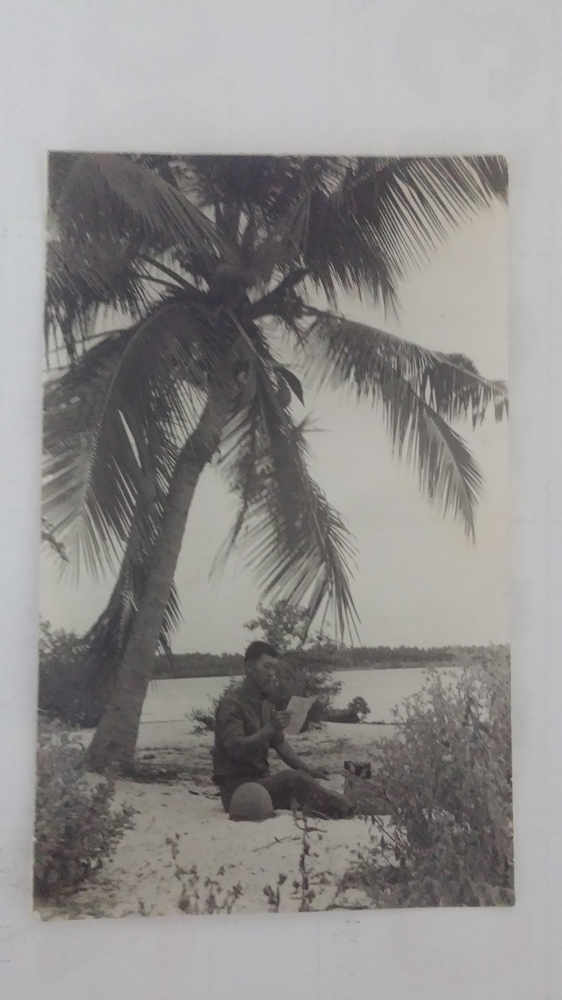

보닌쟝 아버지 월남 참전용사(맹호부대)
살아생전에 월남 파병썰같은거 자주 얘기해주진 않으셨는데 TV에 베트남 관련해서 뭐 나오면 항상 이 말씀 하셨음
"베트남 새끼들만큼 간사하고 사악한 새끼들 없다"

보닌쟝 아버지 월남 참전용사(맹호부대)
살아생전에 월남 파병썰같은거 자주 얘기해주진 않으셨는데 TV에 베트남 관련해서 뭐 나오면 항상 이 말씀 하셨음
"베트남 새끼들만큼 간사하고 사악한 새끼들 없다"
국가간 사죄를 일방적으로 할수가 없음 그래서 사과의사 표명 할때도 상대국과 타진 조율 하는거고
국가가 공식 입장으로 못할거 같은데
우리는 UN군으로 공식적으로 정당하게 남베트남이 요청 해서 간거야
그리고 국가가 직접적으로 전쟁 범죄를 지시 한거도 아니라
그걸 국가가 "우리가 잘못 했습니다"라고 못한 다고 함
기껏해야 유감 표명에 책임자 처벌이지
하고싶은 말 하려고 부모까지 팔아먹진 맙시다
음...
ㅋㅋㅋ 기껏 오지가서 개고생하다 살아돌아왔는데 아들놈이 이모양이라니 아버지 개불쌍
베트남 참전용사가 아버지면 지금 50대후반이 보통이다
난 이글이 어느 ㅂㅅ의 구라라고 믿겠다
외삼촌이 베트남 참전용사인데 사촌형 40임
그럼 엄청 늦둥이 느낌임 ㅋㅋㅋ 50대가 보통 맞다고 봄. 나도 큰아버지 다녀오셧는데 사촌형들 50대임.
나 아는사람도 아버지가 베트남 참전용사인데 늦둥이라 이제 40초반임
니가 아는사실만 진실이라고 착각하지마라
뭐 최근 배그 응우옌새끼들이 병신짓하는거때매 이해는 하는데 월남전 들고오는건 아니지 않냐
베트남전 그냥 한국의 흑역사라 생각하는 사람들 있는 것 같아서 써봄
한국은 이념전쟁 수혜국임
이념전쟁에 참전하는 게 전혀 이상하지 않음
실제로 참전후 학살도 있었는데 이유가 없진 않음
1. 베트남군이 게릴라로 일반인인척 민간학살 유도
[아예 군복 벗고 일반인으로 위장했다는 거임]
2. 덕분에 일반인과 군인의 경계가 깨짐
3. 게릴라 잡아죽이다보니 총알받이에 총알 맞음
4. 무고한 자들 분노 + 게릴라질로 도와주던 베트남 농민들한테 등찔린 국군들 베트콩 멸시 시작
5. 전쟁범죄 발생
6. 종전 이후 사과했지만 정치적 이유로 사과 안 받음
학살 안 하면 좋은 건 개나소나 알지
근데 학살 안했으면 국군 사망수 수십 배는 더 나욌음
> 학살 안 하면 좋은 건 개나소나 알지
근데 학살 안했으면 국군 사망수 수십 배는 더 나욌음
논리가 신박한데?
유감을 표명한적은 있지만 사과한적없어. 베트남 시골에 가면 아직도 한국 증오비(한국군이 민간인 학살한 내용적은)가 많이 세워져있어 1990년대 이걸 없애자고 민간에서 시도했는데 참전군인들이 한겨레 신문사 처들어가 난장까서 없던 일로됨.
진짜 어지럽네 ㅅㅂㅋㅋ 내가 먼저 사람 사는 사이를 숫자로 표현하긴 했지만
니가 군대에서 현지 지원한다고 도와준 농민들이 밤에 총들고 너네 후임 선임 쏴죽이면 제정신 차릴 수 있냐?
혹은 너랑 친하게 지내게 된 현지인이 친하게 지낸다고 현지 게릴라한테 살해라도 당한다면?
그리고 1992년 베트남과 수교 당시 당연히 민간인 학살에 대한 말이 나왔음
당시에 같이 잘 협력해서 살아가보자라는 쪽으로 협의가 됐고
배상 -> 돈으로 해결하기 X
배상 -> 한국 기업의 베트남 투자 확대, 개발원조, 인프라 건설, 산업 기술 협력, 교육·인적교류 이런 거 다함
그렇게 협의가 됐기 때문에 공식적인 사과가 없는 거고 (배상을 의미)
심지어 그렇게 됐다 하더라도 김X중 노X현 문X인 전부 사과하고 유감 던짐
거기에 대해 베트남 정부도 긍정적으로 판단했고
사과의 형태가 꼭 대가리 박고 아 정말 죄송합니다 제가 다 물어내겠습니다 이것만 있는 건 아니잖아
이 병신은 제네바 협약 이전에 태어난 산송장인가
왜? 범죄자한테 니애미 칼에 찔려 뒤지기 직전에도 범죄자님 그건 불법이에요 이지랄하지?
씨발 꼭 남한테 죽을 뻔한 적 없는 새끼들이 협약이니 법이니 뭐니 존나 들이대는데
모든 인간은 씨발놈아 다 내 시점에서 내가 죽으면 세상의 끝이야
죽고 사는 문제에 제네바 협약 이 지랄하네 씨발놈이
부친 분의 희생에 감사합니다. 여기 몇몇 사람들은 전쟁범죄라고 할지라도 그건 작게는 개인의 필요와 생존을 위해, 크게는 국가를 위해 행한 일이라는 것을 알고 있겠습니다
물론 전쟁은하면 안됐고 범죄가맞지만 그 당시에 국가와 가족들의 삶을 위해서 파병을 가야만했고 어쩔수 없이 희생해야만했을거라고 생각함
쓰니 아버지같은 분들이 안계셨으면 우리가 이렇게 크게 도약할만한 자본금도 없었겠지
625전쟁으로 다 무너지고 가진건 사람이랑 물밖에 없는데다가 빚만 가득했던 나라에서 뭐 어떻게 살아남아야했겠나..
항상 참전용사분들과 월남파병용사님들 파독 간호사님들께 감사를 잊지않을게요
국가공식입장은 사건 인정 안했음
유감이다, 빚이있다 회의때 이런거만함